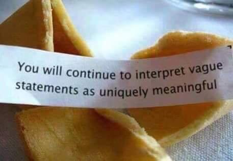

It's a sign! From the universe.
Yes I looked at the same clock half an hour ago when it said 10:41, and yes it hit 11:11 twelve hours ago too, and even twice yesterday.
But I didn’t look up then, so those weren’t signs of synchronicity.
It was only a sign once I saw it.
And then, a livestream went and actually repeated two of the exact same words I had just said.
Whoo hoo! Energy is in vibrational alignment. With me!
Something grand is communicating with me specifically, using my personal clock and phone to do it.
What’s the message being communicated?
Well, OK I don’t know, but it must be important. After all- The Universe sent it.
Maybe it means this is going to be a good year and I”ll be ok. Or maybe it’s a sign this is the right relationship, the right job, the right decision. Or that I’m on the right wavelength.
Never mind the 3 billion other people out there, who may not be so blessed as to catch the clock at just the right time.
But sheesh, so secretive! Bothering to send a message and then not bothering to make the message clear. Making the effort to show the clock at 11:11 only to be unclear about why it gives a damn at all about me, my year, my relationship, my clock or the number 11.
It’s a little weird, this Universe.
Still it can’t be denied that coincidences are happening, right? Alignments, synchronicities, commonalities- definitely real, definitely happening. Certain dots are definitely connected.
Even if they’re part of a zillion random other dots, which all have to be ignored in order to make meaning out of only some of them.
So what exactly is lining these things up to match? What entity, what power, is interested in sending obscure hints of who-knows-what? And why does it bother, what’s in it for it, what’s the benefit, what’s achieved?
More importantly, why is this one minute on the clock a message for me, but not for my friend who didn’t look up just then, or for my client who lives where it’s not 11:11 right now but rather 5:11?
Well, I mean hey, I am pretty special.
From this central point of view, where miscellaneous things appear to line up in connection to me,
this particular self can be seen as vitally important.
Since there can be no doubt, when synchronicity is noticed, that I am the one the stars and energy send messages to and vibrate for.
So if I can catch the clock more often, or pick out a few more corresponding words on the radio, then I’ll matter, and control the universe in a small way, or at least work in cahoots with it.
As opposed to the unromantic possibility that humans simply seek for patterns, and insist on creating order out of randomness, and are calmed by repetition, and make meaning where there isn’t any.
In order to reassure ourselves of our separate existence and special self importance.
Because for synchronicity to be a valid concept, there has to be an individual that receives messages. An individual who is separate and distinct from the message sender.
Objects must be separate from each other in order to synchronize or align or communicate.
Otherwise there’s nothing/ no one to send messages to. In which case, the universe is just sending messages to itself.
No need to do that.
Besides, if all dots are the same connected thing, then there are no dots at all.
Like drops of water in the ocean, they’re all the same stuff, with no beginning and no end. And no “each other.”
As all the same drop, there's nothing to synchronize.
Which, OK yes, does mess up my importance as a person.
But I can’t find where I end and the universe begins.
Luckily I can’t get more important than being everything, including all drops and dots.
Leaving me incomprehensibly bigger than any dreams of synchronicity and vibrational alignment and coincidence.
And that unimportance, that nonexistence as an individual,
is such a relief
and so much more satisfying
than any words or any number
will ever pretend to be.
Click here to get your Mind-Tickled every week.
